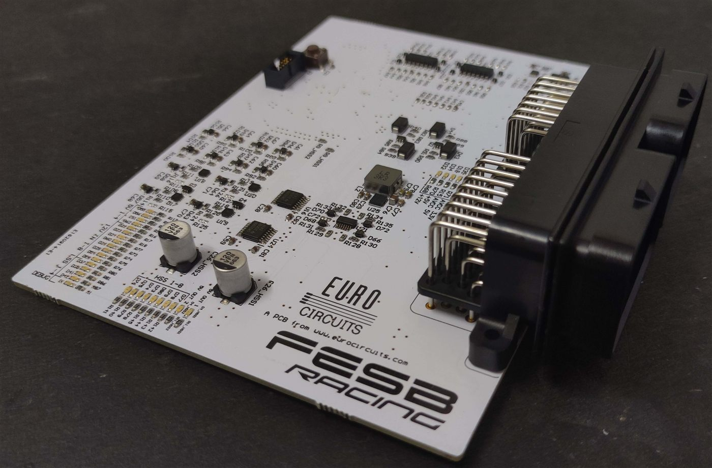
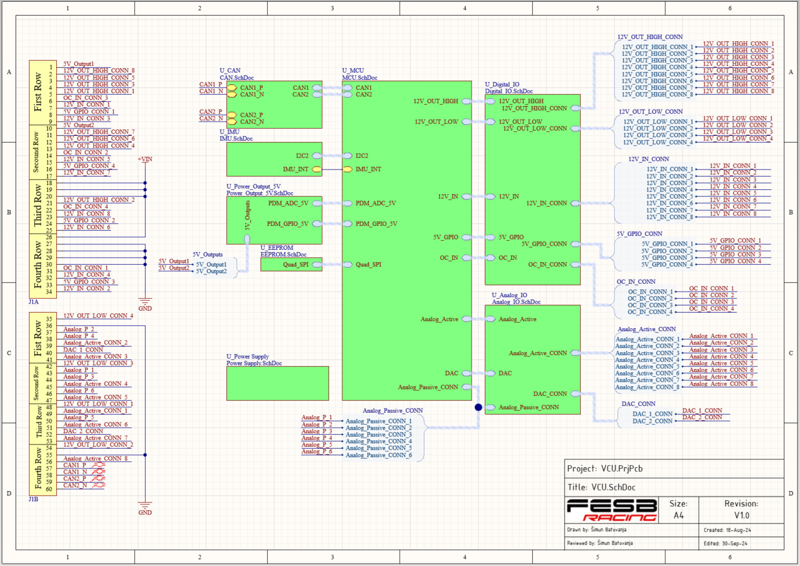
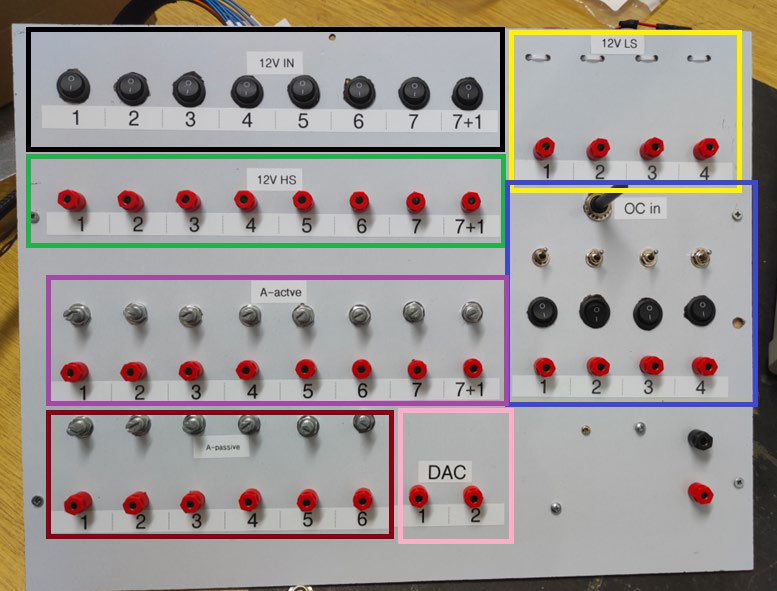
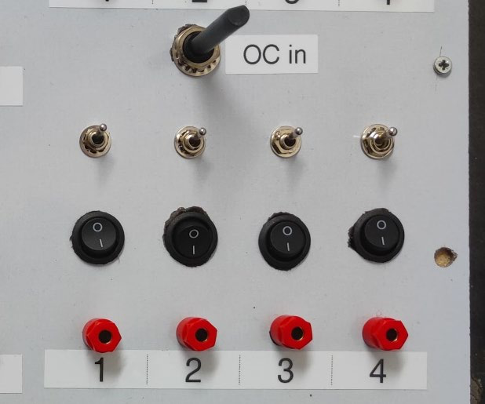

Project
VCU — Vehicle Control Unit
Central control PCB for the race car, built around an onboard MCU with dual CAN bus interfaces, an IMU, and 12V/5V digital and analog I/O. Designed the schematic and PCB layout in Altium and brought the board up from assembly through first power-on.

Overview
The Vehicle Control Unit (VCU) is the car's main control PCB: it reads every sensor outside of the Tractive System Accumulator Container (TSAC) and sends the control signals to the inverters, the Ready-to-Drive (R2D) speaker, the water pumps, and the cooling fans. It is built around an STM32 H7 MCU and is powered from a single 12V input.
Requirements
- Single 12V power supply input
- 2 × CAN interfaces
- IMU and EEPROM
- 5V regulated power output
- 8 × 12V high-side outputs, 4 × 12V low-side outputs
- 8 × 12V digital inputs, 4 × open-collector inputs
- 4 × 5V GPIO pins
- 8 × 5V analog voltage inputs, 6 × analog resistance inputs
- 2 × 5V analog outputs
Functional blocks
CAN
Two independent CAN interfaces (main and auxiliary) are built around MCP2551 transceivers with ESD-protected bus lines. Each interface's RX/TX lines run through 0Ω link resistors rather than being hard-wired directly to the MCU, so if one CAN peripheral on the MCU fails, the two interfaces can be swapped in hardware by reflowing a resistor instead of changing the firmware.
IMU
An ICM-20948 IMU is connected over I2C, translated through a bidirectional level shifter between the sensor's 1.8V domain and the MCU's logic levels. A pull-up network sets the shifter's reference voltage so the translation works in both directions.
EEPROM
Non-volatile storage is provided by an M95P32 EEPROM connected over Quad-SPI, used for calibration data and offline event logging.
Power supply
The 12V input first passes through a protection stage (reverse-polarity and over-current), then feeds a chain of regulators producing the 5V, 5VAVCC, 3.3V, 3.3VAVCC and 1.8V rails the rest of the board needs. Two independently current-limited 1.25A 5V outputs are also provided for external loads, with the current limit set via a selectable resistor (the schematic includes a reference table of resistor values for common current limits).
Digital I/O
The digital I/O block covers five signal types: 12V high-side outputs (level-shifted 3.3V→12V signal outputs only, not intended to supply power — meant for PWM'ing the water pump/fans or an on/off signal to the R2D speaker), 12V low-side outputs (MOSFET switches to GND, for driving relay coils), 12V digital inputs (scaled down to 3.3V with an RC low-pass filter, e.g. for reading shutdown button states), open-collector inputs (a 12V pull-up that an open-collector sensor — like a front-wheel ABS sensor — can pull low), and 5V GPIO pins (configurable as input or output depending on which resistors are populated).
Analog I/O
Three analog sub-blocks are provided: 8 active analog inputs scaling a 5V signal down to the MCU's 3.3V range, 6 passive (resistive) inputs for sensors like NTC thermistors or suspension position sensors, and 2 DAC-driven 5V analog outputs — added for future-proofing, since controlling the inverters is preferred over CAN rather than an analog power request.
Testbench and testing
Rather than testing against the full car harness, a dedicated testbench PCB and panel was built to simulate every input signal and load every output the VCU produces, powered from the same single 12V input as the car (with a hard requirement that reversing that polarity must not damage anything). Each section of the panel is labelled and color-coded by function, with 4mm banana jacks everywhere so individual signals can be probed with a multimeter.

- 12V digital inputs — toggled directly with rocker switches (0 = 0V, 1 = 12V)
- Open-collector inputs — a small NE555-based PCB provides either a steady state (0 or 1, simulating the sensor's internal transistor being open or closed) or a selectable square-wave test frequency (500Hz, 1kHz, 1.5kHz, 2kHz), switched between the two modes with a selector switch
- 5V analog inputs — a potentiometer across a regulated, linear-regulator-derived 5V rail, buffered onto the VCU input
- Variable resistive inputs — a potentiometer to GND, simulating a 0–50kΩ ± 20% sensor
- 12V high-side and low-side outputs — banana plugs for direct voltage verification; the low-side outputs additionally drive a 47Ω, 0.26A-rated resistive dummy load to simulate a relay coil
- 5V analog outputs — banana plugs for voltage verification

CAN communication, the IMU, and the EEPROM were deliberately left outside this testbench's scope — CAN is instead validated with a laptop connected directly to the VCU's D-Sub connectors. The 5V regulated power outputs were also left untested in this first version of the testbench, pending a proper 1.25A dummy load for future iterations.
Results were largely clean: 12V digital inputs, open-collector inputs (both modes), 5V analog inputs, and the variable resistive inputs all produced the expected 0V/5V or 0Ω/50kΩ readings as each control was swept through its range. Output verification matched the MCU's commanded state in every case — 0V/12V on the high-side outputs, 12V/~0.3V on the low-side outputs — and the 5V analog outputs tracked the MCU's DAC output linearly, scaling its 3.3V range up to the bench's 5V. The main open item carried forward from this round was to add a 1.25A dummy load so the 5V regulated power outputs can be exercised in a future testbench revision, alongside care around the 47Ω dummy loads overheating under prolonged use.